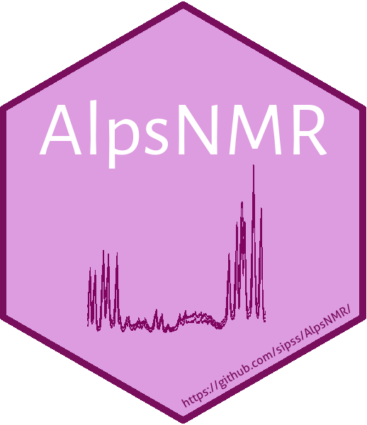

AlpsNMR 


AlpsNMR is an R package that can load Bruker and JDX samples as well as preprocess them.
It includes functions for region exclusion, normalization, peak detection & integration and outlier detection among others. See the package vignette for details.
Installation
Latest release
if (!"BiocManager" %in% rownames(installed.packages()))
install.packages("BiocManager")
BiocManager::install("AlpsNMR")Development version
if (!"remotes" %in% rownames(installed.packages()))
install.packages("remotes")
remotes::install_github("sipss/AlpsNMR")Quick start
Checkout the Introduction to AlpsNMR vignette that shows how to import data and preprocess it using AlpsNMR. See our publication for further details.
See also the tutorial with a real dataset from beginning to end, including all the steps of untargeted metabolomics analysis.